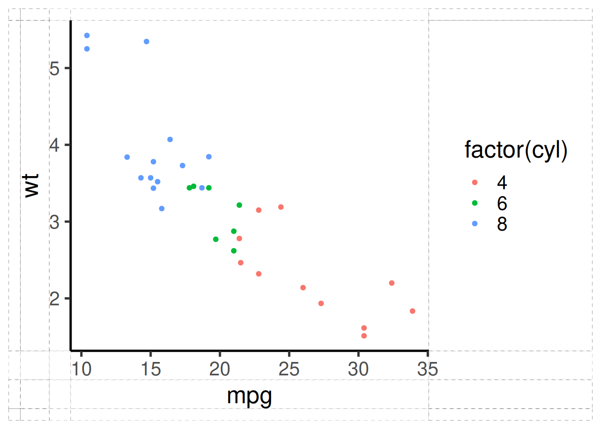
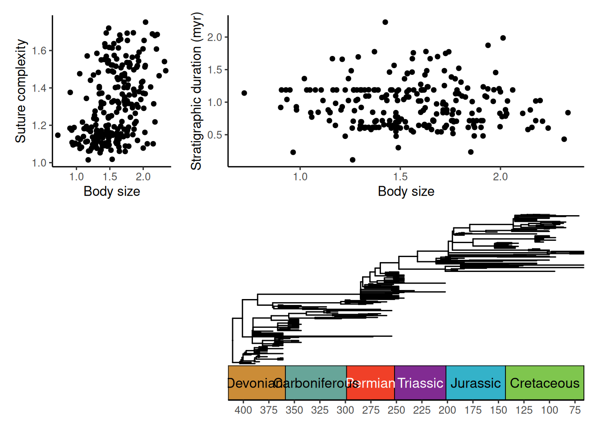

library(deeptime)
# Load ggplot2
library(ggplot2)
# Load ggtree
library(ggtree)
# Load paleotree for some example data
library(paleotree)
data(RaiaCopesRule)The history of arranging and combining plots
Combining multiple plots together into figures is a key component of
developing publishable data visualizations. Many other packages provide
ways to combine and arrange plots. For example, the
gridExtra package has the grid.arrange()
function which allows the user to arrange plots in fairly complex
layouts. However, the main drawback (for most cases) of this function is
that the components of the plots (axes, labels, panels, etc.) are not
aligned. The ggarrange()
function in the egg package uses a 3x3 decomposition of
the individual plots to align some of the plot components. The central
cells correspond to the core panels, surrounded by axes, legends,
etc.
Arranging plots with deeptime
deeptime expands on this functionality with
ggarrange2() to perform 7x7 decomposition of individual
plots, as shown below. This ensures that more components of the
individual plots are aligned with one another (e.g., the axis labels,
the axis tick labels). The central cell corresponds to the plot
panel(s), the rectangle of cells around that corresponds to the axes,
the rectangle of cells around that corresponds to the axis titles, and
the rectangle of cells around that corresponds to legends.
p1 <- ggplot(mtcars, aes(mpg, wt, colour = factor(cyl))) +
geom_point() +
theme_classic(base_size = 20)
ggarrange2(p1, debug = TRUE)
Combining plots
With this 7x7 decomposition process, it becomes very simple to combine plots into single figures with properly aligned components.
p1 <- ggplot(ammoniteTraitsRaia) +
geom_point(aes(x = Log_D, y = FD)) +
labs(x = "Body size", y = "Suture complexity") +
theme_classic()
p2 <- ggplot(ammoniteTraitsRaia) +
geom_point(aes(x = Log_D, y = log_dur)) +
labs(x = "Body size", y = "Stratigraphic duration (myr)") +
theme_classic()
gg1 <- ggarrange2(p1, p2, widths = c(2, 1), draw = FALSE)You can chain calls to ggarrange2() to accomplish highly
complex combinations and arrangements:
p3 <- ggtree(ammoniteTreeRaia, position = position_nudge(x = -ammoniteTreeRaia$root.time)) +
coord_geo(
xlim = c(-415, -66), ylim = c(-2, Ntip(ammoniteTreeRaia)), pos = "bottom",
size = 4, abbrv = FALSE, neg = TRUE
) +
scale_x_continuous(breaks = seq(-425, -50, 25), labels = -seq(-425, -50, 25)) +
theme_tree2() +
theme(plot.margin = margin(7, 11, 7, 11))
ggarrange2(gg1, p3, nrow = 2, heights = c(1, 2))You can also accomplish complex plot layouts by supplying a matrix of
integers to the layout argument, like with the base R
layout() function. This can be used to insert empty plots
or change the order of plots. Note that repeating a number will
duplicate a plot, not expand it across multiple plot spots.
ggarrange2(p1, p2, p3,
layout = matrix(c(1, 2, 0, 3), nrow = 2, byrow = TRUE),
widths = c(1, 3)
)
Other resources for arranging plots
Note that I provide no guarantee that ggarrange2()
solves every problem when arranging plots. The following other options
may also be very useful:
- The cowplot package has the
cowplot::plot_grid()function which accomplishes many of the same features asggarrange2(). - The patchwork package has very intuitive tools for combining and arranging plots (e.g., using mathematical symbols).